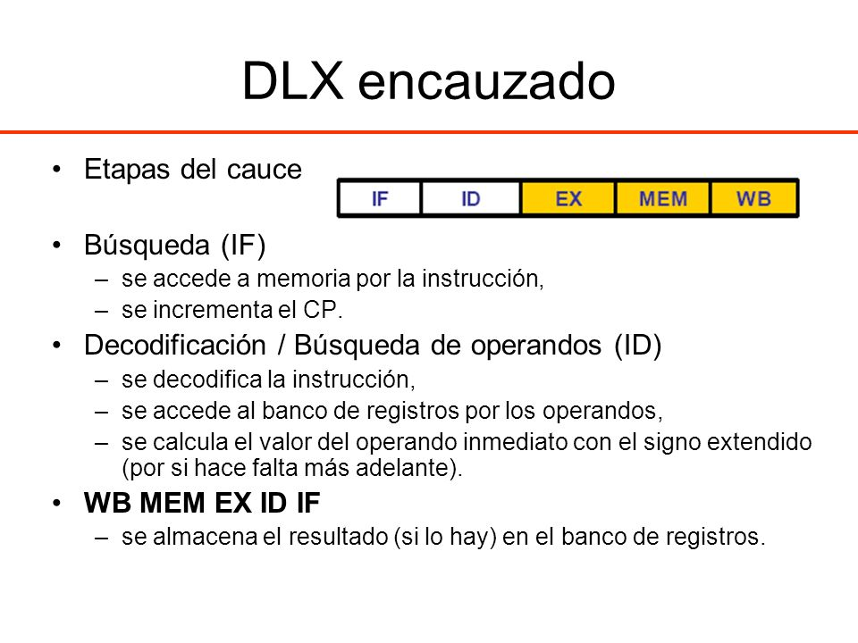
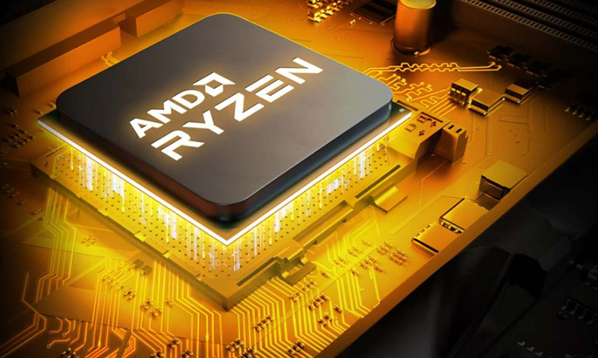

Unidad 1
1.1 Modelos de Arquitecturas
1.1.1 Clásicas
Las primeras computadoras con esta arquitectura fueron las electromecánicas y de tubos de vacio.
En esta, existen dos tipos: Arquitectura de Jonh Von Neumman y Arquitectura Harvard.
Arquitectura Von Neumann

Arquitectura Harvard

Arquitectura Von Neumann
Está formado por una CPU que a su vez contiene una ALU y los registros del procesador,
una unidad de control y un contador de programa. También posee una memoria principal
y un mecanismo de entrada y salida.
Componentes principales
- Unidad de Memoria.
- Unidad de Entrada/Salida.
- Unidad de Control. Incluidos CPU
- Unidad Aritmética Lógica. Incluida en CPU.
- Registros de Programas. Incluidos en CPU.
Existen limitaciones en esta arquitectura que son la longitud
de las instrucciones por el bus de datos, donde el microprocesador
hace varios accesos para realizar instrucciones complejas.
Arquitectura Harvard
En esta se utilizan los micro controladores, tiene el CPU conectado
a dos memorias por medio de dos buses Una memoria tiene instrucciones
y la otra almacena datos Las memorias son independientes, lo cual permite
que el CPU acceda de forma independiente a cada una de ellas.
Estos buses pueden contener distintos contenidos. La longitud de datos e
instrucciones pueden ser distintas y garantiza un un uso optimo de la memoria
Incluso en estos casos, es común emplear instrucciones especiales con el fin de
acceder a la memoria del programa como si fuera datos para la creación de tablas
de solo lectura o para reprogramación, lo que los hace procesadores de arquitectura Harvard modificada.
1.1.2 Segmentadas
Arquitectura utilizada para crear segmentación o paralelismo.
Esta tecnología divide el procesador en diferentes capas y procesa cada una en una instrucción diferente
pero
también trabaja con varias a la vez. Se utiliza el entubamiento, que es la forma de trabajar en forma
paralela
diferentes instrucciones para llevar a cabo la comunicación.
Generalidades Un ciclo de instrucción (también llamado ciclo de fetch-and-execute o ciclo de
fetch-decode-execute en inglés)
es el período que tarda la unidad central de proceso (CPU) en ejecutar una instrucción de lenguaje
máquina.
Comprende una secuencia de acciones determinada que debe llevar a cabo la CPU para ejecutar cada
instrucción en un programa.
Cada instrucción del juego de instrucciones de una CPU puede requerir diferente número de ciclos de
instrucción para su ejecución.
Un ciclo de instrucción está formado por uno o más ciclos máquina.
La segmentación es una técnica de implementación, que explota el paralelismo entre las instrucciones
de un flujo secuencial. Tiene la ventaja sustancial que, de forma distinta a algunas técnicas de aumento
de velocidad,
no es visible al programador.
Segmentación de instrucciones:
Arquitectura DLX.
Encauzamiento de instrucciones en el DLX.
Parones:
por dependencia estructural,
por dependencia de datos,
por dependencia de control.
Múltiples unidades funcionales.
Ejemplo: el MIPS R4000.
Tipos de cauces:
- Unifunción: ejecutan un único proceso.
- Multifunción: pueden ejecutar varios procesos:
- Estáticos: en un instante determinado sólo pueden ejecutar uno.
- Dinámicos: pueden ejecutar simultáneamente varios procesos.
- Lineal: a cada etapa sólo le puede seguir otra etapa concreta.
- No lineal: se pueden establecer recorridos complejos de las etapas.

1.1.3 De multiprocesamiento
Se denomina multiprocesador a un computador que cuenta con dos o más microprocesadores.
El multiprocesador puede ejecutar simultáneamente varios hilos pertenecientes a un mismo
proceso o bien a procesos diferentes. Para que un multiprocesador opere correctamente necesita
un sistema operativo especialmente diseñado para ello.
La arquitectura NUMA, donde cada procesador tiene acceso y control exclusivo a una parte
de la memoria.
La arquitectura SMP, donde todos los procesadores comparten toda la memoria.
El alto rendimiento y bajo coste de los microprocesadores inspiraron un renovado interés en los
multiprocesadores en los años ochenta. Varios microprocesadores se pueden colocar sobre un bus común
porque:
- Son mucho más pequeños que los procesadores multichip
- Las caches pueden disminuir el tráfico del bus y los protocolos de coherencia pueden mantener caché y
memoria consistente.
Las CPUs de multiprocesamiento se clasifican de la siguiente manera:
- SISO – (Single Instruction, Single Operand ), computadoras independientes.
- SIMO – (Single Instruction, Multiple Operand ), procesadores vectoriales.
- MISO – (Multiple Instruction, Single Operand ), no implementado
- MIMO – (Multiple Instruction, Multiple Operand ) sistemas SMP, Clusters
1.2 Análisis de los componentes
1.2.1 Arquitecturas
Para el diseño de un microprocesador, se visualizan las instrucciones.
Arquitectura CISC
En la arquitectura computacional, CISC es un modelo de arquitectura, en donde los microprocesadores
tienen un conjunto instrucciones que caracterizan por ser muy amplio y permitir operaciones complejas
entre operandos, situados en la memoria o en los registros internos.
Entre las ventajas de CISC destacan las siguientes:
- Reduce la dificultad de crear compiladores.
- Permite reducir el costo total del sistema.
- Reduce los costos de creación de software.
El término microprocesador CISC significa “Complex Instruction Set Computer”.
Como sugiere su nombre el microprocesador CISC ejecuta los comandos complejos usando menos líneas de
código.
Una computadora CISC es una computadora donde las instrucciones individuales pueden realizar numerosas
operaciones de bajo nivel. Por ejemplo, una carga de memoria, una operación aritmética y el almacenamiento
en memoria.
Es un plan de diseño de CPU basado en comandos únicos, que son expertos en la ejecución de operaciones de
varios pasos.
Estas acciones se logran mediante procesos de múltiples pasos o modos de direccionamiento en instrucciones
individuales.
Por eso reciben el nombre de “Conjunto de instrucciones complejas”.
Las computadoras CISC tienen programas pequeños. Tiene una gran cantidad de instrucciones compuestas que
exigen
mucho tiempo para su realización.
Un solo conjunto de instrucciones está descrito en varios pasos; cada conjunto de instrucciones tiene más
de 300
instrucciones separadas. Las instrucciones se ejecutan en un tiempo de dos a diez ciclos de máquina.
Arquitectura RISC
Arquitectura computacional, RISC (Reduced Instruction Set Computer) es un tipo de microprocesador
con las siguientes características fundamentales:
- Instrucciones de tamaño fijo y presentado en un reducido número de formatos.
- Sólo las instrucciones de carga y almacenamiento acceden a la memoria de datos.
Este microprocesador está diseñado para llevar a cabo pocas instrucciones al mismo tiempo.
Basado en comandos pequeños, estos chips necesitan menos transistores.
Esta arquitectura hace que los microprocesadores sean económicos de diseñar y producir.
Las características de RISC incluyen lo siguiente:
- Nodos de direccionamiento simples
- La necesidad de instrucciones de código es menor
- Pocos tipos de datos en hardware
- Registro de uso general Idéntico
- Conjunto de instrucciones uniformes
Además, al escribir un programa, RISC lo hace más fácil al permitir que el programador
elimine códigos innecesarios y reduce el desperdicio de ciclos.
En el diseño de una máquina RISC se tienen cinco pasos:
- Analizar las aplicaciones para encontrar las operaciones clave.
- Diseñar un bus de datos que sea óptimo para las operaciones clave.
- Diseñar instrucciones que realicen las operaciones clave utilizando el bus de datos.
- Agregar nuevas instrucciones sólo si no hacen más lenta a la máquina.
- Repetir este proceso para otros recursos.
1.2.2 Unidad Central de Procesamiento
Mejor conocido como CPU, es aquel donde se manejan las instrucciones enteras o tambien de punto flotante
El CPU puede clasificarse según:
- Su arquitectura cauce (pipeline)
- Si son CISC o RISC
- Si son Von Neumann o Harvard.
- Bus de conexión al exterior (8, 16,32, 64 bits)
- Tamaño de ALU
Procesadores Intel
Estos se apoyan bastante en otros componentes del ordenador,
principalmente en las tarjetas gráficas y en la memoria RAM. Con esto c
onsiguen dar buenos resultados sin llevar su rendimiento al limite y mantenerse en
un rendimiento estable hasta con programas o aplicaciones muy exigentes.
Las CPU´s Intel cuentan además, con un sistema de enfriamento por aire con el que conseguiremos
evitar daños por sobrecalentamiento del hardware. Esto es fundamental, tanto si va integrado o no,
que nuestra CPU cuente con un buen sistema de refrigeración, en nuestra web tenéis una amplia gama,
como la Andromeda 120 y estar atentos porque pronto se presentarán más novedades.
Otro aspecto fundamental a la hora de elegir nuestra CPU es para lo que vayamos a dedicar nuestro
ordenador y la potencia que vayamos a necesitar. A mayor potencia mayor será el precio. Actualmente
estamos con la generación Intel Core, siendo la más baja la CPU Intel Core serie x00 hasta llegar a
las más potentes Intel Extreme.

CARACTERÍSTICAS DEL CPU
- Modos de direccionamiento para obtener los operandos de las instrucciones
- Conjunto de instrucciones para ejecutar el CPU
- Modelo de programador
- Ciclo de instrucción
- Buses de interconexión
- Dispositivos de entrada y salida
Para la selección de los procesadores a utilizar en los equipos necesitamos ver las acciones tales como:
Acciones Directas.
• Integrar un nuevo sistema de cómputo.
• Reemplazar un CPU dañado.
• Actualizar un sistema de cómputo.
Acciones Indirectas.
• Comprar equipo de cómputo nuevo.
• Construir un equipo de control – Microcontrolador.
Procesadores AMD
Si nos ponemos detallistas no son procesadores si no microprocesadores que funcionan con un bus
multidireccional
con el que conseguimos una comunicación mucho más fluida entre el chipset y el procesador. Además, no
dependen tanto
de otros componentes del equipo por lo que estrictamente serían más potentes.
En AMD encontraremos los procesadores divididos por arquitecturas, desde los Ryzen 3 que ofrecen una
respuesta
rápida para trabajar o jugar hasta el Ryzen 7 con un rendimiento muy superior que compiten directamente
con los
i5 e incluso i7 de Intel.
Ventajas del procesador serie Opteron de AMD
• Optimizado para la virtualización
• Ayuda a reducir el CTP
• Ideal para satisfacer las necesidades de la infraestructura de TI

1.2.3 Unidad Aritmética Lógica
Mejor conocida como ALU, es un circuito digital que realiza las operaciones aritméticas y lógicas en un
circuito, aritméticas tales como:
suma, resta, división, multiplicación.
Y lógicas como:
si, no u o.
Este también cuenta con una serie de registros para almacenar datos y bits de resultados.
Partes de la ALU:
• Sumador/Restador
• Operadores lógicos (AND, OR, XOR, NOT)
• Registro de salida.
• Acumulador y registro auxiliar.
• Señales de control que indiquen la operación a realizar.
Debe contar con un circuito de control que permita:
• Identificar la operación a realizar
• Administrar los recursos internos
• Generar las banderas
1.2.4 Buses
TSe denomina bus, en informática, al conjunto de conexiones físicas (cables, placa de circuito impreso,
etc.)
que pueden compartirse con múltiples componentes de hardware para que se comuniquen entre sí.
El propósito de los buses es reducir el número de rutas necesarias para la comunicación entre los distintos
componentes,
al realizar las comunicaciones a través de un solo canal de datos. Ésta es la razón por la que, a veces, se
utiliza
la metáfora “autopista de datos”.
En el caso en que sólo dos componentes de hardware se comuniquen a través de la línea, podemos hablar de
puerto hardware
(puerto serial o puerto paralelo).
Características de un bus
Cantidad de Informacion:
Un bus se caracteriza por la cantidad de información que se transmite en forma simultánea.
Este volumen se expresa en bits y corresponde al número de líneas físicas mediante las cuales
se envía la información en forma simultánea.
Un cable plano de 32 hilos permite la transmisión de 32 bits en paralelo. El término “ancho” se utiliza
para designar el número de bits que un bus puede transmitir simultáneamente.
Velocidad del Bus:
Por otra parte, la velocidad del bus se define a través de su frecuencia (que se expresa en Hercios o
Hertz),
es decir el número de paquetes de datos que pueden ser enviados o recibidos por segundo. Cada vez que se
envían
o reciben estos datos podemos hablar de ciclo.
Subconjunto de un bus
En realidad, cada bus se halla generalmente constituido por entre 50 y 100 líneas físicas distintas que se
dividen a su vez en tres subconjuntos:
El bus de direcciones: (también conocido como bus de memoria) transporta las direcciones de memoria
al
que el procesador desea acceder, para leer o escribir datos. Se trata de un bus unidireccional.
El bus de datos: transfiere tanto las instrucciones que provienen del procesador como las que
se dirigen hacia él. Se trata de un bus bidireccional.
El bus de control (en ocasiones denominado bus de comando) transporta las órdenes y las señales
de sincronización que provienen de la unidad de control y viajan hacia los distintos componentes de
hardware.
Se trata de un bus bidireccional en la medida en que también transmite señales de respuesta del hardware.
1.3 Memoria
1.3.1 Conceptos básicos del manejo de la memoria
Es un dispositivo que puede mantenerse en dos estados estables por cierto tiempo.
Puede usarse para representar un bit. A un bit se le conoce como celda básica de memoria.
Un dispositivo de memoria completo, se forma con varias celdas básicas y circuitos asociados
para poder leer y escribir dichas celdas básicas; permiten almacenar un grupo de N bits.
Las memorias de semiconductor no volátiles se están usando también como memorias
secundarias en varios dispositivos de electrónica avanzada y computadoras especializadas y no
especializadas.
A) La memoria interna: Sirve para almacenar información que el sistema utiliza para el inicio y
para que funcionen varios tipos de programas, como los sistemas operativos.
La memoria interna suele estar en microchips pequeños que están unidos o conectados a la placa madre.
Está constituida, normalmente, por un pequeño conjunto de registros de alta velocidad que son internos a
la CPU.
Estos registros los utiliza la CPU como elementos de almacenamiento temporal de instrucciones y de datos.
B) Memoria principal: Es una memoria, relativamente grande y rápida, utilizada para el almacenamiento
de las instrucciones de los programas (que están en ejecución en la computadora) y sus correspondientes
datos.
Se caracteriza por el hecho de que se puede acceder a cualquier información almacenada en ella mediante
instrucciones
del repertorio de la máquina.
C) Memoria externa o secundaria: Son dispositivos periféricos de almacenamiento accesibles a la CPU
a través de controladores de E/S. Las memorias secundarias que se emplean normalmente son, entre otras,
los discos y las cintas magnéticas
1.3.2 Memoria principal
Es denominada como la memoria del semiconductor, que utiliza circuitos integrabos basados en
semiconductores para almacenar información.
Existen memorias de semiconductor de ambos tipos:
Volátiles y no volátiles
Memoria no Volátil
.jfif)
Las memorias de semiconductor no volátiles se están usando también como memorias secundarias en varios
dispositivos de electrónica avanzada y computadoras especializadas y no especializadas.
Memoria Volátil
la memoria principal consiste casi exclusivamente en memoria de semiconductor volátil y dinámica, acceso
aleatorio o más comúnmente RAM (Random Access Memory)
1.3.3 Memoria Caché
La memoria caché es un búfer de memoria que funciona de manera similar a la principal, pero es de menor
tamaño y su acceso es más rápido.
Se sitúa entre el CPU y la memoria de acceso aleatorio (RAM), que ayuda a acelerar el intercambio de datos.
Nivel 2
Se encarga de almacenar datos de uso frecuente, es mayor que la 1 pero más lenta, pero más rápida que la
RAM. Proporciona mayor capacidad y puede contener una copa del nivel 1, además de información extra,
diferente a la 1.
Nivel 1
Llamada memoria interna, se encuentra en el núcleo del procesador. Se utiliza para acceder a datos e
instrucciones importantes y de uso frecuente. Se divide en dos subniveles: Data cache: Se encarga de
almacenar datos usados frecuentemente Instrucción caché: Almacena instrucciones usadas frecuentemente
Nivel 3
Es la más rápida, aún más que la principal, pero más lenta que la 2. Ayuda a que el sistema guarde gran
información pero agiliza las tareas. Puede ser también inclusiva; agiliza el acceso que no se pudo localizar
en el 1 y 2. Consigue una capacidad mayor
1.4 Manejo de la entrada/salida
1.4.1 Módulos de entrada/salida
Para poder hacer una operación entre el procesador y un periférico, se necesita conectar estos
dispositivos a la computadora
y gestionar de manera correcta la transferencia de datos. Esto, se puede realizar mediante los sistemas de
módulos de Entrada/Salida.
Estos módulos están conectados con el procesador y la memoria principal, cada uno controla uno o más
dispositivos externos.
1.4.2 Entrada/salida programada
En esto, el procesador ejecuta un programa que controla toda la operación de E/S (programación,
transferencia de datos y finalización).
Sincronización
El procesador ejecuta un programa que mira constantemente el estado del periférico e indica que esté
preparado. Este método suele denominarse como sincronización por encuesta o espera activa..
Intercambio de dato
El procesador, si es una operación de entrada, lee el registro del módulo E/S para recoger el dato y lo
guarda en la memoria si es de salida. Se produce bajo el control directo y continuo del programa, como
interruptores
1.4.3 Entrada/Salida mediante interrupciones
Esta técnica pretende evitar que el procesador pare o haga trabajo improductivo, mientras que espera a que
el periférico esté preparado para hacer una nueva operación. El hardware de la computadora, necesita tener
un conjunto de líneas de control del bus del sistema y de petición de interrupción
Funcionamiento
1.El procesador ejecuta instrucciones de un programa. Al finalizar cada instrucción comprueba
si se ha producido una interrupción.
2.En caso afirmativo se salva el estado actual del programa (contador del programa y registros)
y se salta a ejecutar la rutina de servicio correspondiente.
3.La rutina de servicio efectúa las operaciones apropiadas en la E/S para realizar
la transferencia de datos solicitada.
4.Al finalizar la rutina de servicio se recupera el estado de la CPU y se continúa ejecutando
el programa que se estaba ejecutando antes de la interrupción.
Las interrupciones pueden ser:
• ENMASCARABLES (se pueden dejar de atender por software)
• NO ENMASCARABLES (siempre atendidas).
• Dos formas de conocer la dirección/posición (vector) donde se encuentra la rutina de servicio de la
interrupción:
• Vector de interrupciones siempre FIJO
• ó el periférico suministra el vector de interrupción
1.4.5 Acceso directo a memoria
Para programar el DMA hay que enviarle al menos los siguientes datos:
• Dirección/puerto periférico E/S.
• Posición/dirección en memoria principal.
• Tamaño (número de bytes a transferir).
• Tipo transferencia: lectura o escritura.
• A diferencia del mecanismo por interrupción convencional, una orden DMA puede transferir muchísimos datos
de una sola vez. Por lo tanto,
el número de interrupciones por byte transferido es mucho menor que con las interrupciones
convencionales:
se gana en rapidez.
• El procesador no se encarga de la transferencia de datos
1.4.6 Canales y procesadores de entrada/salida
Title description, Dec 7, 2017
• Siguiente evolución en los sistemas de E/S:
Tener un procesador capaz de interpretar secuencias de operaciones y de esa forma tener bajo su
control un mayor número de operaciones y módulos de E/S, cada vez más complejas.
• El canal de E/S es un “pequeño” procesador especializado en operaciones de E/S. Si además tiene memoria
propia,
entonces se lo llama procesador de E/S.
Para realizar una transferencia de E/S, la CPU primero ha de indicar qué canal de E/S ejecuta un determinado
programa.
• La CPU también debe definir el área de almacenamiento temporal, establecer una prioridad y establecer las
correspondientes acciones en caso de error. El programa a ejecutar está cargado en memoria principal y puede
contener
instrucciones propias sólo procesables por el canal de E/S.
• Después de terminar la operación de E/S, el canal de E/S deja el resultado en un área de memoria y a
continuación
genera una interrupción para indicar que ha acabado.
1.5 Buses
1.5.1 Tipos de Buses
Existen dos grandes tipos clasificados por el método de envío de la infor paralelo o serial.
Hay diferencias en el desempeño y hasta hace unos años se consideraba que el uso apropiado dependía de la
longitud
física de la conexión: para cortas distancias el bus paralelo, para largas el serial.
Bus Serie
En este los datos son enviados, bit a bit y se reconstruyen por medio de registros o rutinas de software. Está formado
por pocos conductores y su ancho de banda depende de la frecuencia. Es usado desde hace menos de 10 años en buses para
discos duros, tarjetas de expansión y para el bus del procesador.
Bus paralelo
Es un bus en el cual los datos son enviados por bytes al mismo tiempo, con la ayuda de varias líneas que
tienen funciones fijas. La cantidad de datos enviada es bastante grande con una frecuencia
moderada y es igual al ancho de los datos por la frecuencia de función computadores ha sido usado de manera
intensiva, desde el bus del procesador, los buses de discos duros, tarjetas de expansión
y de vídeo, hasta las impresoras.
El Front Side Bus de los procesadores Intel es un bus de este tipo y como cualquier bus presenta unas
funciones en líneas dedicadas:
• Las Líneas de Dirección con el que se desea establecer comunicación.
• Las Líneas de Control son las encargadas de enviar señales de arbitraje entre los dispositivos. Entre las
más importantes están las líneas de interrupción, DMA y los indicadores de estado.
• Las Líneas de Datos trasmiten los bits, de manera que por lo general un bus tiene un ancho que es potencia
de 2.
Un bus paralelo tiene conexiones físicas complejas, pero la lógica es sencilla, que lo hace útil en sistemas
con poco poder de cómputo. En los primeros microcomputadores, el bus era simplemente
la extensión del bus del procesador y los demás integrados “escuchan” la línea de direcciones, en espera de
recibir instrucciones. En el PC IBM original, el diseño del bus fue determinante a la
hora de elegir un procesador con I/O de 8 bits (Intel 8088), sobre uno de 16 (el 8086), porque era posible
usar hardware diseñado para otros procesadores, abaratando el producto.
1.5.2 Estructura de los Buses
Los buses se componen de líneas eléctricas que transmiten un “0” (cero voltios) o un “1” (más de cero voltios).
• Líneas/bus de datos: camino para transferir datos entre el resto de componentes de un computador. Su anchura (número de
líneas eléctricas) suele ser una potencia de dos (8=23, 16=24, 32=25,...).
• Líneas/bus de direcciones: designan la posición/dirección de los datos. Son salidas de la CPU/procesador y determinan
capacidad de direccionamiento. • Líneas/bus de control: controlan el acceso y uso de las líneas/buses anteriores.
1.5.3 Jerarquía de los buses
Compatibilidad entre buses:
Sólo si son eléctricamente idénticos. Las características de los diferentes tipos de buses deben estar normalizadas.
Ejemplo: bus PCI, AGP, USB, FireWire...
Antiguamente sólo existía un bus principal que lo conectaba todo: bus del sistema. Actualmente existe un conjunto de buses
conectados entre sí que forman una jerarquía.
Facilita la mejora del rendimiento de todo el computador al agrupar dentro de los diferentes tipos de buses aquellos
componentes del ordenador que tienen aproximadamente la misma velocidad de transmisión de la información.
Mientras más lejos del CPU, buses más lentos y normalmente de menos líneas de datos.
Existen varios tipos de buses en función de su posición dentro de la jerarquía:
• Bus de CPU ó "bus local" del procesador: elementos más rápidos tales como la memoria caché.
• Bus local ó bus del sistema (Front Side Bus): conecta elementos tales como la memoria principal o dispositivos rápidos (por ejemplo AGP).
• Bus de expansión y/o E/S: PCI, USB, ATA, SCSI, ...
1.6 Interrupciones
Una interrupción es una situación especial que suspende la ejecución de un programa de modo que el sistema
pueda realizar una acción para tratarla. Tal situación se da, por ejemplo, cuando un periférico requiere
la atención del procesador para realizar una operación de E/S.
Una interrupción es el rompimiento en la secuencia de un programa para ejecutar un programa especial
llamando una rutina de servicio cuya característica principal es que al finalizar regresa al punto donde
se interrumpió el programa.
Tipos de interrupciones
Interrupciones de hardware.
Estas son asíncronas a la ejecución del procesador, es decir, se pueden producir en cualquier momento independientemente
de lo que esté haciendo el CPU en ese momento.
Excepciones
Son aquellas que se producen de forma síncrona a la ejecución del procesador. Normalmente son causadas al realizarse
operaciones no permitidas tales como la división entre 0, el desbordamiento, el acceso a una posición de memoria no permitida, etc.
Interrupciones por software
Son aquellas generadas por un programa en ejecución. Para generarlas, existen distintas instrucciones en el código
máquina que permiten al programador producir una interrupción.
Unidad 2
2.1 Organización del procesador
La función principal de un procesador es ejecutar instrucciones y la organización que tiene viene condicionada
por las tareas que debe realizar y por cómo debe hacerlo.
Los procesadores están diseñados y operan según una señal de sincronización.
Esta señal, conocida como señal de reloj, es una señal en forma de onda cuadrada periódica con una determinada frecuencia.
Todas las operaciones hechas por el procesador las gobierna esta señal de reloj: un ciclo de reloj determina
la unidad básica de tiempo, es decir, la duración mínima de una operación del procesador.
Para ejecutar una instrucción, son necesarios uno o más ciclos de reloj, dependiendo del tipo de instrucción
y de los operandos que tenga.
Las prestaciones del procesador no las determina solo la frecuencia de reloj, sino otras características del procesador,
especialmente del diseño del juego de instrucciones y la capacidad que tiene para ejecutar simultáneamente múltiples instrucciones.
Para ejecutar las instrucciones, todo procesador dispone de tres componentes principales:
1) Un conjunto de registros:
Espacio de almacenamiento temporal de datos e instrucciones dentro del procesador.
2) Unidad aritmética y lógica o ALU:
Circuito que hace un conjunto de operaciones aritméticas y lógicas con los datos almacenados dentro del procesador.
3) Unidad de control:
Circuito que controla el funcionamiento de todos los componentes del procesador. Controla el movimiento de datos e
instrucciones dentro y fuera del procesador y también las operaciones de la ALU.
2.2 Estructura de registros
Los registros vienen de tres tipos: datos, direcciones e índice, que tiene lugar en casi todos los aspectos
de la operación del CPU. El tamaño de un registro depende del CPU; los más simples tienen registros que aceptan
8 o 16 bits de datos y los más complejos tienen registros de 32, 48 o 64 bits.
Clasificación de los registros
Registro de datos:
Un CPU puede funcionar con datos en uno de tres modos: entre dos registros, entre registros
y una ubicación de Memoria de acceso al azar (RAM - Random-Access Memory) y entre dos ubicaciones RAM.
Como el CPU está conectado directamente a los registros, las operaciones que implican dos registros son las
más rápidas; las que se dan entre ubicaciones RAM son las más lentas. Es decir, junta dos registros, añade un
registro a una ubicación RAM, o añade dos ubicaciones RAM.
Registro de direcciones:
Para que un CPU pueda almacenar y recuperar datos en RAM, debe tener la dirección de la memoria de la información.
Esas operaciones que implican RAM usan registros de dirección de memoria. EL CPU no realiza aritmética en estos registros;
en cambio, los usa para ubicar datos que necesita.
Registro de índice:
Un CPU no puede hacer matemáticas en registros de datos, aunque puede hacerlo indirectamente con un registro de índice.
Éste trabaja con los registros de datos, permitiendo a un programa procesar hilos de información eficazmente.
Registros de segmento:
Un registro de segmento tiene 16 bits de longitud y facilita un área de memoria para direccionamiento
conocida como segmento actual.
• Registro Cs: El dos almacena la dirección inicial del segmento de código de un programa en el registro CS
Indica la dirección de una instrucción que es buscada para su ejecución.
• Registro Ds: Genera una referencia a la localidad de un byte específico en el segmento de datos.
• Registro SS: Permite la colocación en memoria de una pila, para almacenamiento temporal de dirección y datos.
• Registro ES: Se utiliza para algunas operaciones con cadenas de caracteres se utiliza para el manejo de direccionamiento de memoria.
Registros de propósito general:
Los registros de propósito general son el AX, BX, CX, y DX, de 16 bits. Cada uno de ellos se divide en dos
registros de 8 bits, llamados AH y AL, BH y BL, CH y CL, y, DH y DL, H significando High (alto) y L significando
Low (bajo), indicando la parte alta o la parte baja del registro correspondiente de 16 bits.
• Registro AX: El registro es el registro acumulador, es utilizado para operaciones que implican entrada/salida,
y multiplicación y división (estas dos últimas en conjunto con el registro DX).
• Registro BX: El registro es el registro base, y es el único registro de propósito general que puede ser un índice
para direccionamiento indexado.
• Registro CX: El registro es conocido como el registro contador. Puede contener un valor para controlar el número de
veces que un ciclo se repite o un valor para corrimiento de bits.
• Registro DX: El de datos se indica mediante el número de puerto de entrada/salida, y en las operaciones
de multiplicación y división de 16 bits.
Registros de apuntadores:
Los registros SP (apuntador de pila) y BP (apuntador base) están asociados con el registro SS y permiten al sistema acceder
a datos en el segmento de la pila.
• Registro SP: El apuntador de pila de 16 bits está asociado con el segmento SS y proporciona un valor de desplazamiento que
se refiere a la palabra actual que está siendo procesada en la pila.
• Registro BP: El apuntador base de 16 bits facilita la referencia de parámetros dentro de la pila.
Registros de banderas:
Es un registro de 16 bits, de los cuales nueve sirven para indicar el estado actual de la máquina y el resultado del procesamiento.
Registro de punteros de instrucción:
El registro IP de 16 bits contiene el desplazamiento de dirección de la siguiente instrucción que se ejecuta. El IP está
asociado con el registro CS en el sentido de que el IP indica la instrucción actual dentro del segmento de código que se
está ejecutando actualmente en la memoria.
2.2.1 Registros visibles para el usuario
Se dice que un registro es visible al usuario para significar el hecho de que puede ser referenciado
por medio del lenguaje máquina que ejecuta la CPU. Se pueden clasificar en las siguientes categorías:
• Uso general
• Datos
• Direcciones
• Códigos de condición
Los registros de uso general pueden se asignados por el programador a diversas funciones.
A veces, su uso dentro del repertorio de instrucciones es ortogonal a la operación. Es decir, cualquier
registro de uso general puedecontener el operando para cualquier código de operación. Esto proporciona
una utilización de registros de auténtico uso general. Con frecuencia, sin embargo, existen
restricciones, por ejemplo puede haber registros específicos para operaciones con coma flotante
y operaciones de pila.
En algunos casos, los registros de uso general pueden utilizarse para funciones de direccionamiento.
En otros casos hay una separación parcial o total entre registros de datos y registros de direcciones,
los primeros pueden usarse únicamente para contener datos, y no pueden emplearse en cálculo
de una dirección de un operando. Los registros de dirección pueden ser de uso más o menos general,
o pueden estar dedicados a un modo de direccionamiento particular. Se pueden citar los siguientes ejemplos:
Punteros de segmento: En una máquina con direccionamiento segmentado un registro de segmento
contiene la dirección de la base del segmento. Puede haber múltiples registros, por ejemplo uno para el SO
y otro para el proceso actual.
Registros índices: Se usan para el direccionamiento indexado, y pueden ser auto indexado.
Puntero de pila: Si existe direccionamiento a pila visible al usuario, la pila está normalmente
en memoria, y hay registro dedicado que apunta a la cabecera de esta. Esto permite el direccionamiento
implícito, es decir, apilar, desapilar y otras instrucciones de la pila que no necesitan contener un operando
explícito referente a ella.
Aquí hay varias cuestiones de diseño a estudiar, una importante es si se usan registros de uso completamente general o si especificar su uso.
Con el uso de registros especializados, generalmente puede quedar implícito en el código de la
operación a qué tipo de registro se refiere un determinado campo de operando. El campo de operando
solo debe identificar uno de entre un conjunto de registros especializados, en lugar de uno de entre todos los registros, lo cual ahorra bits.
2.2.2 Registros de control y de estados
Hay diversos registros del procesador que se emplean para controlar su funcionamiento. La mayoría de ellos, en la mayor parte de las máquinas no son visibles
por el usuario, pero alguno de ellos puede ser visible por ciertas instrucciones máquina ejecutadas en un modo
privilegiado o de sistema operativo.
Naturalmente, diferentes máquinas tendrán distinta organización de registros y usarán distinta terminología.
Son esenciales cuatro registros para la ejecución de una instrucción:
• Contador de programa (Program Counter- PC):
Contiene la dirección de la instrucción a buscar.
• Registro de instrucción (Instruction Register- IR):
Contiene la instrucción buscada mas recientemente.
• Registro de dirección de memoria (Memory Address Register- MAR):
Contiene la dirección de una posición de memoria.
• Registro amortiguador de memoria (Memory Buffer Register - MBR):
Contiene el dato a escribir en una posición de memoria o el dato contenido en una posición de memoria leído más recientemente
No todos los procesadores tienen registros internos designados como MAR o MBR pero se necesita algún
mecanismo de almacenamiento intermedio equivalente mediante el cual se de salida a los bits que van a
ser transferidos por el bus de sistema se almacenen los bits leídos por el bus de datos.
Típicamente, el procesador actualiza el PC luego de cada búsqueda de instrucción, de manera que siempre
apunte a la siguiente instrucción a ejecutar. Una instrucción de bifurcación o salto también modificará
el valor del registro PC. La instrucción buscada se carga en IR, donde son analizados los códigos de operación
y los campos de operando. Se intercambian datos con la memoria por medio del MAR y el MBR. El MAR se conecta
con el bus de direcciones y el MBR con el bus de datos. Los registros visibles por el usuario repetidamente cambian datos con MBR.
2.2.3 Ejemplos de registros de CPU reales
Resulta instructivo examinar y comparar las organizaciones de registros desistemas análogos. En esta sección, examinamos
microprocesadores de 16bits que fueron diseñados aproximadamente al mismo tiempo: el MotorolaMC68000 [STRI79] y
el lntel 8086 [MORS78].
El MC68000 distribuye sus registros de 32 bits en ocho de datos y nueve de direcciones. Los ocho registros de datos
se usan principalmente paramanipulación de datos y también se usan en direccionamiento como registrosíndice.
El Intel 8086 usa un enfoque diferente para la organización de los registros. Cada uno de los registros tiene un
uso especial, aunque algunos registros se puedenemplear también para un uso general. El 8086 contiene cuatro registros
de datos de 16 bits que son direccionables como registros de bytes o como registros de 16bits, y cuatro registros punteros
e índices de 16 bits. Los registros de datos pueden utilizarse como de uso general en algunas instrucciones. En otras,
los registros se usan implícitamente.
2.3 El ciclo de instrucción
2.3.1 Ciclo Fetch-Decode-Execute
1.- Buscar la instrucción en la memoria principal
• Se vuelca el valor del contador de programa sobre el bus de direcciones.
• Entonces la CPU pasa la instrucción de la memoria principal a través del bus de datos al Registro de Datos de Memoria (MDR).
• A continuación el valor del MDR es colocado en el Registro de Instrucción Actual (CIR), un circuito que guarda la instrucción
temporalmente de manera que pueda ser decodificada y ejecutada.
2.- Decodificar la instrucción
• El decodificador de instrucción interpreta e implementa la instrucción.
• El registro de instrucción (IR) mantiene la instrucción en curso mientras el contador de programa (PC, program counter)
guarda la dirección de memoria de la siguiente instrucción a ser ejecutada.
• Recogida de datos desde la memoria principal
• También se lee la dirección efectiva de la memoria principal si la instrucción tiene una dirección indirecta, y se recogen
los datos requeridos de la memoria principal para ser procesados y colocados en los registros de datos.
Ciclo de búsqueda
• Los pasos 1 y 2 del ciclo de instrucción se conocen como ciclo de búsqueda (fetch). Estos pasos son idénticos
en todas las instrucciones.
• El ciclo de búsqueda procesa la instrucción a partir de la palabra de instrucción, que contiene el código de operación
y el operando.
Ciclo de ejecución.
Los pasos 3 y 4 del ciclo de instrucción se conocen como ciclo de ejecución. Estos pasos cambiarán con cada tipo de instrucción.
• El primer paso del ciclo de ejecución es el proceso de memoria, en que los datos se transfieren entre la CPU y el módulo
de entrada/salida (I/O).
• A continuación se produce el proceso de datos, que usa operaciones matemáticas así como operaciones lógicas en referencia
a los datos.
• Después tiene lugar el paso de alteraciones centrales, que son una secuencia de operaciones, por ejemplo una operación de
salto. El último paso es una operación combinada de todos los otros pasos.
3.- Ejecutar la instrucción
• A partir del registro de instrucción, los datos que forman la instrucción son decodificados por la unidad de control.
• Ésta interpreta la información como una secuencia de señales de control que son enviadas a las unidades funcionales
relevantes de la CPU para realizar la operación requerida por la instrucción.
4.- Almacenar o guardar resultados
• El resultado generado por la operación es almacenado en la memoria principal o enviado a un dispositivo de salida
dependiendo de la instrucción.
• Basándose en los resultados de la operación, el contador de programa se incrementa para apuntar a la siguiente
instrucción o se actualiza con una dirección diferente donde la próxima instrucción será recogida.
2.3.2 Segmentación de instrucciones
Es una técnica que permite implementar el paralelismo a nivel de instrucción en un único procesador. La segmentación
intenta tener ocupadas con instrucciones todas las partes del procesador dividiendo las instrucciones en una serie
de pasos secuenciales que efectuarán distintas unidades de la CPU, tratando en paralelo diferentes partes de las
instrucciones. Permite una mayor tasa de transferencia efectiva por parte de la CPU que la que sería posible a una
determinada frecuencia de reloj, pero puede aumentar la latencia debido al trabajo adicional que supone el propio
proceso de la segmentación.
Conforme la segmentación se hace más "profunda" (aumentando el número de pasos dependientes), un paso determinado
puede implementarse con circuitería más simple, lo cual puede permitir que el reloj del procesador vaya más rápido.
En inglés, las segmentaciones de este tipo pueden llamarse superpipelines.
Se dice que un procesador está totalmente segmentado si puede leer una instrucción en cada ciclo. Por tanto, si
ciertas instrucciones o condiciones requieren un retardo que impide la lectura de nuevas instrucciones, el procesador
no está totalmente segmentado.
El número de pasos dependientes varían según la arquitectura de la máquina. Algunos ejemplos:
• Entre 1956 y 1961, el proyecto IBM stretch proponía los términos Fetch (Lectura), Decode (Decodificación) y Execute
(Ejecución) que se convirtieron en habituales.
• La segmentación RISC clásica comprende:
1. Lectura de instrucción
2. Decodificación de instrucción y lectura de registro
3. Ejecución
4. Acceso a memoria
5. Escritura de vuelta en el registro
• Las microcontroladoras Atmel AVR y PIC disponen cada una de segmentación de dos etapas.
• Muchos diseños incluyen segmentación de 7, 10 e incluso 20 etapas (como es el caso del Pentium 4 de Intel).
• Los núcleos "Prescott" y "Cedar Mill" de la microarquitectura NetBurst de Intel, utilizados en las versiones más
recientes del Pentium 4 y sus derivados Pentium D y Xeon, tienen una segmentación de 31 etapas.
• El "Xelerated X10q Network Processor" cuenta con una segmentación de más de 1000 etapas, si bien en este caso
200 de estas etapas representan CPU independientes con instrucciones programadas de forma individual. Las etapas
restantes se usan para coordinar los accesos a la memoria y las unidades funcionales presentes en el chip.
2.3.3 Conjunto de instrucciones, características y funciones
Ante el diseño de un nuevo ordenador de propósito general hay que plantearse la siguiente cuestión: ¿Qué tipos de
instrucciones deben ser incluidos en su conjuntos de instrucciones? Antes de responder a esta pregunta, analizaremos
las características que deben tener los juegos de instrucciones de las máquinas. Los conjuntos de instrucciones de
las máquinas deben tender a poseer una serie de propiedades, bastante ideales e imprecisas, que pueden resumirse en
las siguientes: El conjunto de instrucciones de un computador debe ser completo en el sentido de que se pueda construir
un programa para evaluar una función computable usando una cantidad de memoria razonable y empleando un tiempo moderado,
es decir, el número de instrucciones de ese programa no debe ser demasiado elevado. Los juegos de instrucciones también
tienen que ser eficientes, esto significa que las funciones más necesarias deben poder realizarse usando pocas instrucciones.
El conjunto de instrucciones de una máquina debe ser regular, es decir debe ser simétrico (por ejemplo, si existe una
instrucción de desplazamiento a la izquierda, debe haber otra de desplazamiento a la derecha, etc.) y ortogonal, es decir,
deben poder combinarse, en la medida de lo posible, todos las operaciones con todos los tipos de datos y modos de
direccionamiento. En muchas ocasiones, también se le debe exigir a un computador que su juego de instrucciones sea
compatible con modelos anteriores.
Tipos de instrucciones
Una máquina puede llegar a funcionar con un juego de instrucciones muy limitado (recuérdese, por ejemplo, la máquina
de Turing que sólo tiene 4 instrucciones, incluso se han diseñado máquinas teóricas con menos instrucciones), esto
simplificaría mucho los circuitos de la máquina. Sin embargo, un conjunto de instrucciones demasiado simplificado origina,
como consecuencia, unos programas demasiado complejos e ineficientes. Es necesario encontrar un compromiso entre la
simplicidad del hardware y del software. Un mínimo para llegar a ese compromiso se consigue con los tipos de instrucciones
siguientes: Instrucciones de transferencia de datos. Instrucciones aritméticas. Instrucciones lógicas. Instrucciones de
control del flujo del programa (bifurcaciones, bucles, procedimientos, etc.) Instrucciones de entrada y salida. En los
apartados siguientes iremos viendo con detalle algunos de estos tipos de instrucciones. Si bien es cierto que el conjunto
de instrucciones debe de cumplir unos mínimos para conseguir una mínima eficiencia en los programas, también se verá que
ésta no se aumenta indefinidamente al incrementar el número de instrucciones de la máquina.
2.3.4 Modos de direccionamiento
Son las diferentes maneras de especificar un operando dentro de una instrucción. Un modo de direccionamiento especifica
la forma de calcular la dirección de memoria efectiva de un operando mediante el uso de la información contenida en
registros dentro de una instrucción de la máquina.
Direccionamiento implícito
Depende solamente de la instrucción, es decir, la instrucción no lleva parámetros.
Particularmente en instrucciones que no accesan memoria, o bien que tienen una forma específica de accesarla.
Ejemplos: PUSHF, POPF, NOP
Modo registro
Usa solamente registros como operandos
Es el más rápido, pues minimiza los recursos necesarios (toda la información fluye dentro del EU del CPU)
Ejemplo: MOV AX, BX
Modo indirecto
Se usan los registros SI, DI como apuntadores
El operando indica una localidad de memoria, cuya dirección (sólo la parte desplazamiento) está en SI o DI.
Es más lento que los anteriores, pues tiene que “calcular” la localidad
Ejemplos:
MOV AL, [SI]
MOV BL, ES:[SI] ; Aquí se dice que se usa un “segment override”, donde se indica que en vez de usar el segmento
de datos por defecto, se use en su lugar como referencia el segmento extra.
Modo indexado de base
Formato:
[
BX o BP
+ SI o DI (opcionales)
+ constante (opcional)
]
BX o BP indica una localidad base de la memoria
A partir de BX o BP, se puede tener un desplazamiento variable y uno constante
La diferencia es el segmento sobre el que trabajan por defecto:
BX por defecto en el segmento de datos
BP por defecto en el segmento de pila.
Ejemplos:
MOV AX, [BX]
MOV DX, [BX+2]
MOV CX, [BX+DI]
MOV DL, [BX+SI+3]
Modo inmediato
Tiene dos operandos: un registro y una constante que se usa por su valor.
El valor constante no se tiene que buscar en memoria, pues ya se obtuvo al hacer el “fetch” de la instrucción.
Ejemplo:MOV AH, 9
Modo directo
Uno de los operandos involucra una localidad específica de memoria
El valor constante se tiene que buscar en memoria, en la localidad especificada.
Es más lento que los anteriores, pero es el más rápido para ir a memoria, pues ya “sabe” la localidad, la toma
de la instrucción y no la tiene que calcular.
Ejemplo: MOV AH, [0000]
MOV AH, Variable
Estas dos instrucciones serían equivalentes, si Variable está, por ejemplo, en la localidad 0 de memoria.
En la forma primitiva del lenguaje de máquina, como el primer ejemplo, se tiene que indicar “mover a AH el contenido
(indicado por los corchetes), de la localidad 0 de los datos (lo de los datos es implícito). El lenguaje Ensamblador,
sin embargo, nos permite la abstracción del uso de variables, pero como una variable tiene una localidad determinada en
memoria, para el procesador funciona igual. La única diferencia consiste en que el programador no tiene que preocuparse
por la dirección, ese manejo lo hace automáticamente el Ensamblador.
Unidad 4
Un procesador en paralelo es el método mediante el cual una serie de tareas e instrucciones se ejecutan de forma simultánea.
Como cualquier trabajo en paralelo, se trata de dividir el trabajo en trozos más simples, que actualmente solemos llamar
hilos, threads o subprocesos. Cada uno de estos subprocesos es ejecutado en uno de los núcleos del procesador de forma
simultánea para aminorar el tiempo de espera entre tarea y tarea. Más adelante lo explicaremos con más detalle.
Sin darnos cuenta (o igual si), tenemos en nuestra casa procesadores en paralelo casi para cualquier tarea, por ejemplo,
nuestros móviles cuentan con procesadores multinúcleo capaces de ejecutar varias tareas, nuestros ordenadores también e
incluso los televisores inteligentes ya cuentan con procesadores de este tipo.
4.1 Aspectos Básicos de la computación paralela
La computación paralela es una forma de cómputo en la que muchas instrucciones se ejecutan simultáneamente, operando sobre
el principio de que problemas grandes, a menudo se pueden dividir en unos más pequeños, que luego son resueltos simultáneamente
(en paralelo). Hay varias formas diferentes de computación paralela: paralelismo a nivel de bit, paralelismo a nivel de
instrucción, paralelismo de datos y paralelismo de tareas. El paralelismo se ha empleado durante muchos años, sobre todo
en la computación de altas prestaciones, pero el interés en ella ha crecido últimamente debido a las limitaciones físicas
que impiden el aumento de la frecuencia. Como el consumo de energía y por consiguiente la generación de calor de las
computadoras constituye una preocupación en los últimos años, la computación en paralelo se ha convertido en el paradigma
dominante en la arquitectura de computadores, principalmente en forma de procesadores multinúcleo.
Aspectos a considerar
• Diseño de computadores paralelo: Escalabilidad y Comunicaciones.
• Diseño de algoritmos eficientes: No hay ganancia si los algoritmos no se diseñan adecuadamente.
• Métodos para evaluar los algoritmos paralelos: ¿Cómo de rápido se puede resolver un problema usando una máquina paralela?
¿Con qué eficiencia se usan esos procesadores?.
• Lenguajes para computadores paralelos, flexibles para permitir una implementación eficiente y que sean fáciles de programar.
• Herramientas para la programación paralela.
• Programas paralelos portables.
• Compiladores paralelizantes.
Las computadoras paralelas pueden clasificarse según el nivel de paralelismo que admite su hardware: equipos con procesadores
multinúcleo y multi-procesador que tienen múltiples elementos de procesamiento dentro de una sola máquina y los clústeres,
MPPS y grids que utilizan varios equipos para trabajar en la misma tarea. Muchas veces, para acelerar la tareas específicas,
se utilizan arquitecturas especializadas de computación en paralelo junto a procesadores tradicionales.
4.2 Tipos de computación paralela
Paralelismo a nivel de bit:
Desde el advenimiento de la integración a gran escala (VLSI) como tecnología de fabricación de chips de computadora en la
década de 1970 hasta alrededor de 1986, la aceleración en la arquitectura de computadores se lograba en gran medida duplicando
el tamaño de la palabra en la computadora, la cantidad de información que el procesador puede manejar por ciclo.
Paralelismo de datos:
El paralelismo de datos es el paralelismo inherente en programas con ciclos, que se centra en la distribución de los datos
entre los diferentes nodos computacionales que deben tratarse en paralelo. La paralelización de ciclos conduce a menudo a
secuencias similares de operaciones —no necesariamente idénticas— o funciones que se realizan en los elementos de una gran
estructura de datos. Muchas de las aplicaciones científicas y de ingeniería muestran paralelismo de datos.
Una dependencia de terminación de ciclo es la dependencia de una iteración de un ciclo en la salida de una o más iteraciones
anteriores. Las dependencias de terminación de ciclo evitan la paralelización de ciclos.
Paralelismo a nivel de instrucción:
Un programa de ordenador es, en esencia, una secuencia de instrucciones ejecutadas por un procesador. Estas instrucciones
pueden reordenarse y combinarse en grupos que luego son ejecutadas en paralelo sin cambiar el resultado del programa. Esto
se conoce como paralelismo a nivel de instrucción. Los avances en el paralelismo a nivel de instrucción dominaron la
arquitectura de computadores desde mediados de 1980 hasta mediados de la década de 1990.
Los procesadores modernos tienen ''pipeline'' de instrucciones de varias etapas. Cada etapa en el pipeline corresponde a
una acción diferente que el procesador realiza en la instrucción correspondiente a la etapa; un procesador con un pipelinede
N etapas puede tener hasta n instrucciones diferentes en diferentes etapas de finalización. El ejemplo canónico de un procesador
segmentado es un procesador RISC, con cinco etapas: pedir instrucción, decodificar, ejecutar, acceso a la memoria y escritura.
El procesador Pentium 4 tenía un pipeline de 35 etapas.
Paralelismo de tareas:
El paralelismo de tareas es la característica de un programa paralelo en la que cálculos completamente diferentes se pueden
realizar en cualquier conjunto igual o diferente de datos. Esto contrasta con el paralelismo de datos, donde se realiza el
mismo cálculo en distintos o mismos grupos de datos. El paralelismo de tareas por lo general no escala con el tamaño de un
problema.
4.2.1 Clasificación
Taxonomía de las Computadoras
Las diferentes posibilidades existentes para desarrollar sistemas paralelos hacen que una clasificación definitiva sea
complicada. Se muestra una clasificación clásica propuesta por Flynn, que se basa en el ciclo de instrucciones y en el
flujo de dato.
Taxonomía de FLYNN
En 1966 Flynn propuso una clasificación generalista de las computadoras adoptando como criterio el flujo de instrucciones y
el flujo de datos que en ellos se desarrolla. La clasificación de Flynn es la siguiente:
SISD:
Instrucción única, datos únicos. Las instrucciones se ejecutan secuencialmente pero pueden estar solapadas
en las etapas de ejecución.
SIMD:
Instrucción única, datos múltiples. Son los procesadores matriciales en los que existen varias unidades
de procesamiento trabajando sobre flujos de datos distintos pero ejecutando la misma instrucción.
MISD:
Instrucción múltiple, datos únicos. Este se caracteriza por la existencia de varias unidades de procesamiento cada una
ejecutando una instrucción diferente pero sobre el mismo flujo de datos.
MIMD:
Es una técnica empleada para lograr paralelismo. Las máquinas que usan MIMD tienen un número de procesadores que funcionan
de manera asíncrona e independiente.
4.2.2 Arquitectura de computadores secuenciales
Los computadores secuenciales, también denominados computadores serie, se basan en la arquitectura de j. von neumann.
En este modelo se considera una única secuencia de instrucciones que tratan una única secuencia de datos. Por ello se
conocen como computadores
La programación paralela permite:
– Resolver problemas que no caben en una CPU
– Resolver problemas que no se resuelven en un tiempo razonable
– Se pueden ejecutar
– Problemas mayores
– Más rápidamente (aceleración)
– Más problemas
4.2.3 Organización de direcciones de memoria
El intercambio de información entre procesadores depende del sistema de almacenamiento que se disponga.
Sistemas de memoria compartida o multiprocesadores
Se caracterizan por compartir físicamente la memoria, es decir todos acceden al mismo espacio de direcciones.
En esta arquitectura a la memoria es igualmente accesible por todos los procesadores a través de la red de interconexión.
Sistemas de memoria distribuida o multicomputadores
En estos sistemas cada procesador dispone de su propia memoria.
Denominada local o privada, independientedel resto y accesible solo por su procesador.
Existen dos espacios de dirección disponibles para el microcontrolador Z8PLUS:
• El archivo de registros de la RAM contiene direcciones para todos los registros de control y los de propósitogeneral.
• La memoria de programa contiene direcciones para todas las localidades de memoria donde se hallan guardado códigos o
datos ejecutables
4.3 Sistemas de memoria compartida: Multiprocesadores
Un multiprocesador puede verse como un computador paralelo compuesto por varios procesadores interconectados que comparten
un mismo sistema de memoria.
Los sistemas multiprocesadores son arquitecturas MIMD con memoria compartida. Tienen un único espacio de direcciones para
todos los procesadores y los mecanismos de comunicación se basan en el paso de mensajes desde el punto de vista del programador.
Dado que los multiprocesadores comparten diferentes módulos de memoria, pudiendo acceder a un mismo módulo varios procesadores,
a los multiprocesadores también se les llama sistemas de memoria compartida.
Los programas típicamente se escriben asumiendo que sus datos son incorruptibles. Sin embargo, si otra copia del programa
se ejecuta en otro procesador, las dos copias pueden interferir entre sí intentando ambas leer o escribir su estado al mismo tiempo.
Para evitar este problema se usa una variedad de técnicas de programación incluyendo semáforos y otras comprobaciones y
bloqueos que permiten a una sola copia del programa cambiar de forma exclusiva ciertos valores.
Dependiendo de la forma en que los procesadores comparten la memoria, se clasifican en sistemas multiprocesador UMA, NUMA y COMA.
Multiproceso es tradicionalmente conocido como el uso de múltiples procesos concurrentes en un sistema en lugar de un único
proceso en un instante determinado. Como la multitarea que permite a múltiples procesos compartir una única CPU, múltiples
CPUs pueden ser utilizados para ejecutar múltiples hilos dentro de un único proceso.
El multiproceso para tareas generales es, a menudo, bastante difícil de conseguir debido a que puede haber varios programas
manejando datos internos (conocido como estado o contexto) a la vez.
4.3.1 Redes de interconexión dinámica (indirecta)
Medio compartido
Conmutadas
Redes de interconexión dinámica (indirecta)
Uno de los criterios más importantes para la clasificación de las redes es el que tiene en cuenta la situación de la red
en la máquina paralela, dando lugar a dos familias de redes: redes estáticas y redes dinámicas. Una red estática es una
red cuya topología queda definida de manera definitiva y estable durante la construcción de la máquina paralela.
La red simplemente une los diversos elementos de acuerdo a una configuración dada. Se utiliza sobre todo en el caso de los
multicomputadores para conectar los diversos procesadores que posee la máquina. Por la red sólo circulan los mensajes entre
procesadores, por lo que se dice que la red presenta un acoplamiento débil. En general, en las redes estáticas se exige poca
carga a la red.
Una red dinámica es una red cuya topología puede variar durante el curso de la ejecución de un programa paralelo o entre dos
ejecuciones de programas. La red está constituida por elementos materiales específicos, llamados commutadores o switches.
Medio compartido
En el ejemplo del subapartado anterior sólo había un emisor y un receptor unidos por una fibra óptica. En el mundo de las
comunicaciones, y de las redes de computadores en particular, el medio que se utiliza para comunicarse suele estar compartido.
Con una serie de ejemplos iremos viendo diferentes maneras de compartir el medio.
En el caso de la televisión o la radio, existen diferentes canales y emisoras que están compartiendo el medio. A fin de que
no haya problemas, hay una regulación del espectro radioeléctrico: se tiene cuidado de que cada uno de los canales tenga
asignada una frecuencia determinada y que no haya más de un canal usando la misma frecuencia. Este sistema se llama
multiplexación por división de frecuencia y no sólo se utiliza en la radio y la televisión.
Por ejemplo, los sistemas de línea de abonado digital asimétrica (ADSL) utilizan este sistema para conectar la red de
computadores de casa a Internet. Como se puede ver en la figura siguiente, por el cable telefónico circulan tres tipos
de información, cada uno por su frecuencia asignada: la voz de las llamadas telefónicas, la información digital que viene
de Internet (bajada) y la información digital que nosotros enviamos a Internet (subida).
Si lo que se está compartiendo es una fibra óptica, se tiende a realizar una multiplexación por división del tiempo.
Supongamos que una misma fibra está siendo utilizada por cuatro comunicaciones. En ese caso, la fibra estará disponible
durante un instante determinado de tiempo para la comunicación número 1; el siguiente instante de tiempo lo estará para la
comunicación 2 y así sucesivamente. Una vez haya acabado la comunicación número 4, la fibra volverá a estar disponible para
la comunicación 1.
Otro método de compartición del acceso en el medio se basa en la distribución de éste por parte de un dispositivo maestro.
Por ejemplo, en la tecnología Bluetooth, los dispositivos próximos forman una red llamada piconet. En cada piconet se elige
un dispositivo maestro que va preguntando a los demás dispositivos (que hacen las funciones de esclavo) quién debe utilizar
el medio. En el caso de que alguien lo necesite, lo tendrá disponible durante cierto tiempo.
Conmutadas
Cuando se va a enviar datos a largas distancias (e incluso a no tan largas), este debe pasar por varios nodos intermedios.
Los cuáles son los encargados de dirigir los datos para que lleguen a su destino. Por lo cual se hace uso de lo que es una
red conmutada. ya que estas Consisten en un conjunto de nodos interconectados entre sí, a través de medios de transmisión,
formando así la mayoría de las veces una topología mallada, donde la información se traslada encaminándola del nodo de origen
al nodo destino mediante conmutación entre nodos intermedios.
Una transmisión de este tipo tiene 3 fases:
-Establecimiento de la conexión.
-Transferencia de la información.
-Liberación de la conexión.
Así mismo podemos decir que Se entiende por conmutación en un nodo, a la conexión física o lógica, de un camino de entrada
al nodo con un camino de salida del nodo, con el fin de transferir la información.
En pocas palabras se puede decir que una red conmutada es aquella que permite la comunicación de nodo a nodo a través de
su conexión, para facilitar el traslado de información.
4.4 Sistemas de memoria distribuida: Multicomputadores
Los sistemas de memoria distribuida o multicomputadores pueden ser de dos tipos básicos. El primer de ellos consta de un
único computador con múltiples CPUs comunicadas por un bus de datos mientras que en el segundo se utilizan múltiples
computadores, cada uno con su propio procesador, enlazados por una red de interconexión más o menos rápida.
Sobre los sistemas de multicomputadores de memoria distribuida, se simula memorias compartidas. Se usan los mecanismos
de comunicación y sincronización de sistemas multiprocesadores.
Un clúster es un tipo de arquitectura paralela distribuida que consiste de un conjunto de computadores independientes
interconectados operando de forma conjunta como único recurso computacional sin embargo, cada computador puede utilizarse
de forma independiente o separada.
En esta arquitectura, el computador paralelo es esencialmente una colección de procesadores secuenciales, cada uno con su
propia memoria local, que pueden trabajar conjuntamente.
• Cada nodo tiene rápido acceso a su propia memoria y acceso a la memoria de otros nodos mediante una red de comunicaciones,
habitualmente una red de comunicaciones de alta velocidad.
• Los datos son intercambiados entre los nodos como mensajes a través de la red.
• Una red de ordenadores, especialmente si disponen de una interconexión de alta velocidad, puede ser vista como un
multicomputador de memoria distribuida y como tal ser utilizada para resolver problemas mediante computación paralela.
4.4.1 Redes de interconexión estáticas
Las redes estáticas emplean enlaces directos fijos entre los nodos. Estos enlaces, una vez fabricado el sistema son
difíciles de cambiar, por lo que la escalabilidad de estas topologías es baja. Las redes estáticas pueden utilizarse
con eficiencia en los sistemas en que pueden predecirse el tipo de tráfico de comunicaciones entre sus procesadores.
Clases de redes de interconexión:
• Formación lineal: Se trata de una red unidimensional en que los nodos se conectan cada uno con el siguiente
medianteN-1 enlaces formando una línea.
• Mallas y toros: Esta red de interconexión es muy utilizada en la práctica. Las redes en toro son mallas en que sus
filas y columnas tienen conexiones en anillo, esto contribuye a disminuir su diámetro. Esta pequeña modificación permite
convertir a las mallas en estructuras simétricas y además reduce su diámetro a la mitad.
4.4 Sistemas de memoria distribuida: Multicomputadores
Ejemplos de caso de estudio:
1. NVIDIA PYSICS LAYER: GPU PhysXCPU PhysXGraphics Layer: GPU –Direct X Windows
2. INTELPYSICS LAYER:No GPU PhysXCPU HavokGraphics Layer:GPU –Direct XWindows
3. AMD PYSICS LAYER: No GPU PhysXCPU HavokGraphics Layer:GPU –Direct XWindows
Interesa realizar investigación en la especificación, transformación, optimización y evaluación de algoritmos
distribuidos y paralelos. Esto incluye el diseño y desarrollo de sistemas paralelos, la transformación de
algoritmos secuenciales en paralelos, y las métricas de evaluación de performance sobre distintas plataformas
de soporte (hardware y software). Más allá de las mejoras constantes en las arquitecturas físicas de soporte,
uno de los mayores desafíos se centra en cómo aprovechar al máximo la potencia de las mismas.